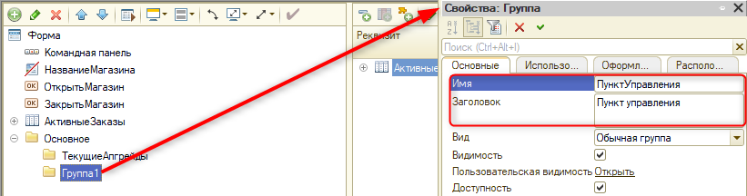
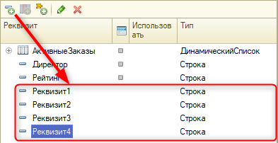

Тема занятия – реализация механизма, благодаря которому на начальном экране будут выводиться актуальные для игрока апгрейды.
На этом занятии мы выполним 2 задачи:
Для реализации первой задачи потребуется внести изменения в общую форму "НачальнаяСтраница".
Откроем ветку "Общие" и развернем "Общие формы". Двойным нажатием левой кнопки мыши по "НачальнаяСтраница" откроем общую форму (рис. 11.1).
Рис. 11.1. Переход в форму "НачальнаяСтраница"
На текущий момент начальная страница состоит из названия магазина, кнопок "Открыть магазин" и "Закрыть магазин", а также списка актуальных заказов.
Добавим разделение по функционалу на форму с помощью нескольких групп. Первая группа будет разделять функционал на апгрейды и пункт управления.
Добавим новую группу, нажав на "Форма" правой кнопкой мыши и выбрав "Добавить". В окне выбора типа элемента укажем "Группа – Обычная группа без отображения" (рис. 11.2).
Рис.11.2. Добавление группы на форму
В палитре свойств элемента "Группа1" изменим имя группы на "Основное", а также укажем вид группировки – "Горизонтальная всегда" (рис. 11.3).
Рис.11.3. Настройка группы "Основное"
Следующее, что необходимо сделать, – это добавить в группу "Основное" группы "Текущие апгрейды" и "Панель управления".
Для того чтобы добавить новую группу сразу внутри "Основное", необходимо сфокусироваться на ней и нажать на кнопку "Добавить". Данная группа должна быть с заголовком – "Группа – Обычная группа" (рис. 11.4).
Рис. 11.4. Добавление первой группы с отображением
Имя группы – "ТекущиеАпгрейды" (рис. 11.5).
Рис.11.5. Настройка группы "Текущие апгрейды"
Вторая группа также должна располагаться в группе "Основное" и отображаться с заголовком (рис. 11.6).
Рис. 11.6. Добавление второй группы с отображением
Имя группы – "ПунктУправления" (рис. 11.7).

Рис. 11.7. Настройка группы "Пункт управления"
Созданные группы будут располагаться горизонтально внутри группы "Основное": слева –"Текущие апгрейды", справа – "Пункт управления". "Текущие апгрейды" и "Пункт управления" будут вертикальными группами. В палитре свойств у каждой группы укажем в свойстве "Группировка" – "Вертикальная" (рис. 11.8).
Рис. 11.8. Изменение группировки
Далее необходимо добавить в группу "ПунктУправления" еще одну группу, в которой будут располагаться команды формы. Для данной группы заголовок выводить уже не требуется (рис. 11.9).
Рис. 11.9. Добавление новой группы без заголовка
Имя группы – "КомандыФормы" (рис. 11.10).
Рис. 11.10. Настройка группы "КомандыФормы"
В группу "Команды формы" добавим еще одну группу с отображением заголовка. Имя группы – "ОсновныеКоманды", заголовок – "Основные", группировка – "Вертикальная" (рис. 11.11).
Рис. 11.11. Добавление и настройка группы "Основные команды"
Добавим в группу "ОсновныеКоманды" кнопки "Открыть магазин" и "Закрыть магазин" (рис. 11.12).
Рис. 11.12. Добавление команд в группу
Также переместим таблицу "Активные заказы" в группу "Пункт управления" (рис. 11.13).
Рис. 11.13. Перенос таблицы в группу
Следующее, что необходимо сделать, – это добавить в группу "Панель управления" информацию о том, кто является директором магазина, а также рейтинг текущего игрока.
Для реализации данной задачи потребуется создать два новых реквизита формы с помощью кнопки "Добавить" на вкладке "Реквизиты" в правом верхнем окне (рис. 11.14).
Рис. 11.14. Перенос таблицы в группу
В палитре свойств реквизита "Реквизит1" изменим имя на "Директор", тип – "строка", длина – 0 (рис. 11.15). Для второго реквизита укажем имя "Рейтинг", тип – "строка", длина – 0 (рис. 11.16).
|
|
Рис. 11.15. Настройка реквизита "Директор" |
Рис. 11.16. Настройка реквизита "Рейтинг" |
Для данных реквизитов был выбран именно строковый тип данных, так как не существует ссылочного типа данных для констант. Заполняться эти реквизиты будут программно.
Добавим их на форму. Для этого выделим оба реквизита и, зажав левую кнопку мыши, перенесем их в "Пункт управления" (рис. 11.17). Переместим элементы в верхнюю часть группы "Пункт управления" с помощью панели навигации (рис. 11.18).
Рис. 11.17. Добавление реквизитов на форму |
Рис. 11.18. Перемещение элементов |
Изменим вид данных элементов на "Поле надписи", чтобы пользователь не мог вводить в них свои значения (рис. 11.19 – 11.20).
Рис. 11.19. Изменение вида элемента "Рейтинг"
Рис. 11.20. Изменение вида элемента "Директор"
Следующее, что потребуется реализовать, – это отображение картинок апгрейдов. Всего на форме будет четыре картинки для отображения изображения актуального на данный момент апгрейда из каждой категории.
Для реализации данного механизма потребуется создать четыре реквизита, в которых и будут храниться адреса картинок.
С помощью кнопки "Добавить" добавим четыре новых реквизита на вкладке "Реквизиты" (рис. 11.21).

Рис. 11.21. Добавление новых реквизитов
Настроим каждый из реквизитов:
Рис. 11.22. Изменение имени реквизита "Реквизит1" |
Рис. 11.23. Изменение имени реквизита "Реквизит2" |
Рис. 11.24. Изменение имени реквизита "Реквизит3" |
Рис. 11.25. Изменение имени реквизита "Реквизит4" |
Далее перенесем созданные реквизиты на форму в группу "ТекущиеАпгрейды" (рис. 11.26).
Рис. 11.26. Добавление реквизитов в группу "ТекущиеАпгрейды"
Изменим вид каждого поля на "Поле картинки" (рис. 11.27 – 11.30).
Рис. 11.27. Изменение вида поля "АдресКартинкиУлучшениеМагазина" |
Рис. 11.28. Изменение вида поля "АдресКартинкиУлучшениеЛогистики" |
Рис. 11.29. Изменение вида поля "АдресКартинкиКоличествоСотрудников" |
Рис. 11.30. Изменение вида поля "АдресКартинкиПлюшкиДляГостей" |
Но теперь все апгрейды отображаются вертикально друг под другом. Чтобы это исправить, создадим две новые группы, которые позволят распределить картинки по рядам.
Добавим первую группу, нажав правой кнопкой мыши по группе "Текущие апгрейды" и выбрав "Добавить". В списке типов элементов выберем "Группа – Обычная группа без отображения" (рис. 11.31).
Рис. 11.31. Добавление первой группы
Имя группы – "ВерхнийРяд", группировка – "Горизонтальная всегда". В данную группу необходимо определить "Количество сотрудников" и "Плюшки для гостей" (рис. 11.32).
Рис. 11.32. Работа с группой "Верхний ряд"
Добавим еще одну группу для текущих апгрейдов. Вид группы – "Группа – Обычная группа без отображения". Имя группы – "НижнийРяд". Также определим в данную группу поля для отображения улучшений магазина и логистики (рис. 11.33).
Рис.11.33. Работа с группой "Нижний ряд"
В результате форма выглядит следующим образом: слева идут текущие апгрейды в два уровня. Вверху отображаются сотрудники и "плюшки" для гостей, ниже – улучшения магазина и логистики. С правой стороны отображается пункт управления, содержащий в себе рейтинг, имя директора, основные команды, а также список текущих заказов.
Вторая задача, которую нужно реализовать, – это отображение картинок текущих актуальных апгрейдов из каждой категории в созданных элементах, а также вывод информации о директоре и рейтинге игрока.
Для реализации данной задачи потребуется определить событие "ПриОткрытии" для всей формы.
Перейдем в палитре свойств формы на вкладку "События" и с помощью кнопки "Открыть" добавим обработчик события на клиенте (рис. 11.34).
Рис. 11.34. Добавление обработчика события "ПриОткрытии"
Процедура "ПриОткрытии" – это обработчик события формы. Определим его в отдельную область "ОбработчикиСобытийФормы".
При открытии формы необходимо обновлять данные игрока. За это будет отвечать процедура "ОбновитьДанныеИгрока". Определим данную процедуру в области "СлужебныеПроцедурыИФункции". Она будет серверная, так как в ней будут считываться данные картинок апгрейдов, информация о директоре и рейтинг игрока, то есть информация из базы данных.
Сначала реализуем заполнение реквизита "Рейтинг". Для этого обратимся к реквизиту формы "Рейтинг" и присвоим ему значение из константы "РейтингИгрока".
Аналогичным образом получим информацию о директоре магазина.
Обновим конфигурацию базы данных и запустим пользовательский режим.
Рис. 11.35. Начальная страница
В результате на начальной странице теперь отображается информация о директоре магазина, рейтинге игрока, списке текущих заказов, а также апгрейдах.
Но на данный момент поля для отображения текущих апгрейдов в категориях пустые. Необходимо реализовать механизм считывания данных картинок.
Логика анализа картинок будет одинаковой во всех случаях: отличие будет заключаться лишь в названии – необходимо обратиться к регистру сведений, считать вид апгрейда и проанализировать, какой это был апгрейд.
Закроем пользовательский режим и вернемся в конфигуратор.
Определим получение картинки, а именно ее адреса, в отдельную функцию. С помощью данной функции будем получать либо адрес картинки, либо пустую строку, если адреса нет.
В области "СлужебныеПроцедурыИФункции" опишем серверную функцию "ПолучитьАдресКартинки".
Получение адреса картинки должно зависеть от вида апгрейда, поскольку на начальном экране их четыре – улучшения логистики и магазина, "плюшки" для гостей и количество сотрудников.
Для реализации такой зависимости передадим в функцию параметр, в котором будет указана ссылка на вид апгрейда.
Далее в этой функции необходимо реализовать отбор данных из регистра сведений по виду апгрейда. По правилам синтаксиса языка программирования, для реализации отбор должен быть структурой.
Структура представляет из себя пару "ключ – значение". Ключ должен совпадать с именем измерения, по которому осуществляется отбор. В качестве значения укажем параметр функции.
В данном случае названия ключа и значения совпадают. Однако в кавычках указано название измерения регистра сведений "РегистрацияАпгрейдов", а без кавычек – это название переменной, в которой хранится ссылка на вид апгрейда.
Следующее, что нужно сделать, – это получить последние актуальные записи, которые зафиксированы в регистре сведений.
Эти данные можно получить с помощью метода "СрезПоследних", которые вернет несколько записей из регистра сведений в виде таблицы.
"СрезПоследних" – это чтение последних актуальных записей, которые есть в регистре. |
Первый параметр в методе "СрезПоследних" указывать не требуется, так как нет необходимости делать отбор по дате. В качестве второго параметра укажем созданную ранее структуру "СтруктураОтбора".
В результате может быть получено как несколько записей, так и ни одной. Реализуем проверку наличия записей в таблице "ТаблицаАпгрейдов". Для этого необходимо определить, сколько всего строк получилось в результирующей таблице.
Если "ВсегоСтрок" будет равна нулю, то значит, что в таблице нет записей, следовательно, нет необходимости анализировать картинки.
Если записи в таблице есть, и их несколько, то необходимо получать последнюю актуальную запись и получать по ней картинку.
Дело в том, что, например, по виду апгрейда "Количество сотрудников" может быть несколько записей в системе, но на главном экране необходимо отображать только последний купленный апгрейд из категории.
Реализуем соответствующее условие.
Если строк в таблице больше, чем ноль, то необходимо получить запись апгрейда как обращение к таблице "ТаблицаАпгрейдов" и чтение ее последней записи.
Если записей всего две, то в переменной "ВсегоСтрок" будет значение 2, но нумерация записей в таблице начинается с нуля, поэтому необходимо сделать поправку на единицу.
Таким образом, будет получена запись о регистрации текущего апгрейда, но в ней достаточно много информации, а именно: название, вид, цена, рейтинг и документ-регистратор. Поэтому необходимо уточнить, какие именно данные будут записаны в переменную "ЭлементАпгрейда".
Так как картинка хранится в карточке апгрейда, то получим ссылку на сам апгрейд из одноименного измерения.
Далее сформируем адрес картинки как получение навигационной ссылки.
Поскольку сейчас работа идет с записью о приобретении апгрейда, то можно получить информацию о том, сколько рейтинга оно принесло игроку.
При открытии игры можно считывать информацию о приобретенных ранее апгрейдах и на основании этого формировать текущий рейтинг игрока.
Рейтинг игрока будет формироваться как сумма текущего рейтинга игрока и рейтинг анализируемого апгрейда.
Однако сейчас для системы "РейтингИгрока" ничего не значит, это лишь переменная, которая изменяется на основании своего предыдущего значения, которое не было определено ранее.
Исправим данную ситуацию, указав, что изначальное значение переменной "РейтингИгрока" соответствует значению из константы "РейтингИгрока".
Сейчас был реализован благоприятный исход, в котором были получены ссылка на картинку и количество очков рейтинга, которые принесла покупка текущего апгрейда. Но при получении среза последних записей из регистра может получиться так, что в таблице "ТаблицаАпгрейдов" не будет строк.
Реализуем алгоритм работы программы при таком исходе. Для этого определим ветку "Иначе" в блоке условия.
Если строк в таблице не будет, то тогда "АдресКартинки" будет пустой строкой.
Прочитав рейтинг игрока, необходимо обратиться к константе "РейтингИгрока" и записать в нее получившееся значение. Изменить значение константы можно с помощью метода "Установить()".
Таким образом, при запуске игры будут анализироваться все четыре апгрейда, и если игрок приобретал их ранее, то рейтинг будет изменяться.
Так как "ПолучитьАдресКартинки" – функция, необходимо возвращать значение, а именно "АдресКартинки".
Данная функция должна вызываться в процедуре "ОбновитьДанныеИгрока". Она возвращает адрес картинки, который необходимо подставить в соответствующие реквизиты формы. При вызове функции необходимо указать в качестве параметра ссылку на вид апгрейда из перечисления.

Обновим конфигурацию базы данных и запустим пользовательский режим.
Рис. 11.35. Начальная страница игры
В результате на начальном экране отобразились картинки приобретенных игроком апгрейдов, а также рейтинг.
Однако изображения разместились непропорционально, так как для элементов с картинками не был указан авторазмер.
Закроем пользовательский режим и вернемся в конфигуратор.
Откроем форму начального экрана и для четырех элементов с картинками в палитре свойств на вкладке "Оформление" укажем "Автоматический размер" (рис. 11.36).

Рис. 11.36. Изменение размеров картинок
Обновим конфигурацию базы данных и запустим пользовательский режим.
Рис.11.37. Итоговый вариант формы начальной страницы
На этом одиннадцатое занятие окончено!
На этом занятии мы настроили форму начального экрана таким образом, что на ней теперь отображаются картинки купленных игроком апгрейдов.
На следующем занятии будет доработан механизм подсчета рейтинга игрока, а также настроена зависимость между рейтингом игрока и скоростью поступления новых заказов.
Это нужно запомнить |
|
|
Чтобы узнать значение из константы, необходимо использовать метод "Получить()", а для того, чтобы его изменить – "Установить()". С помощью метода "СрезПоследних()" можно считать последние актуальные записи из регистра сведения. Структура представляет из себя пару "ключ – значение". Ключ может быть только строковым типом данных. Значение – любым. При создании структуры для отбора данных ключ должен совпадать с именем измерения, по которому осуществляется отбор. |